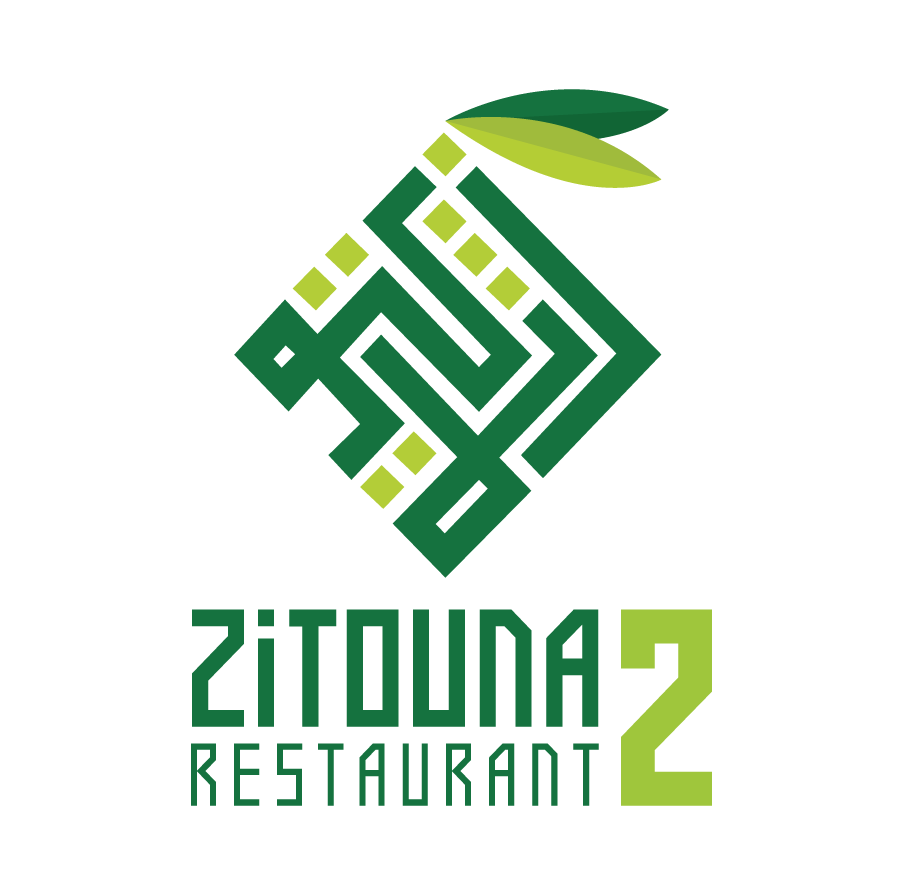

Passer au menu

ZITOUNA
2
Restaurant
✕
‹
›
🌿
🌿
🌿
ZITOUNA
2
Restaurant
Spécialités Tunisiennes & Fruits de Mer
·
المطبخ التونسي الأصيل
+216 20 513 513
·
Route Sokra Km 1, Résidence Yasmine — Sfax
Voir le Menu
Résultats pour :
✕ Effacer